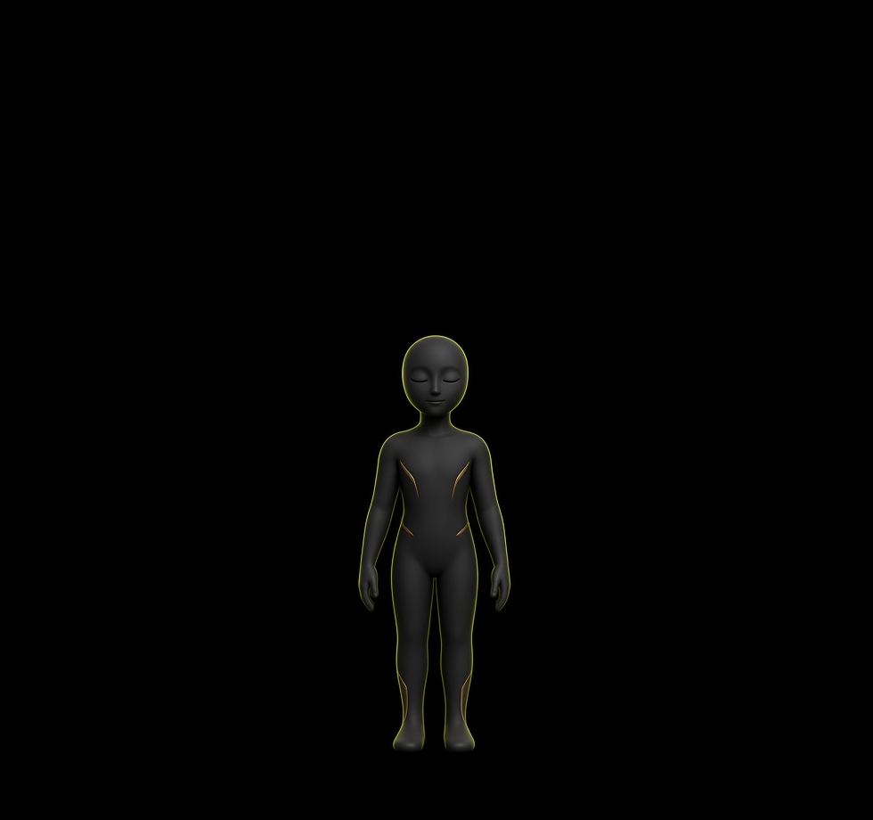
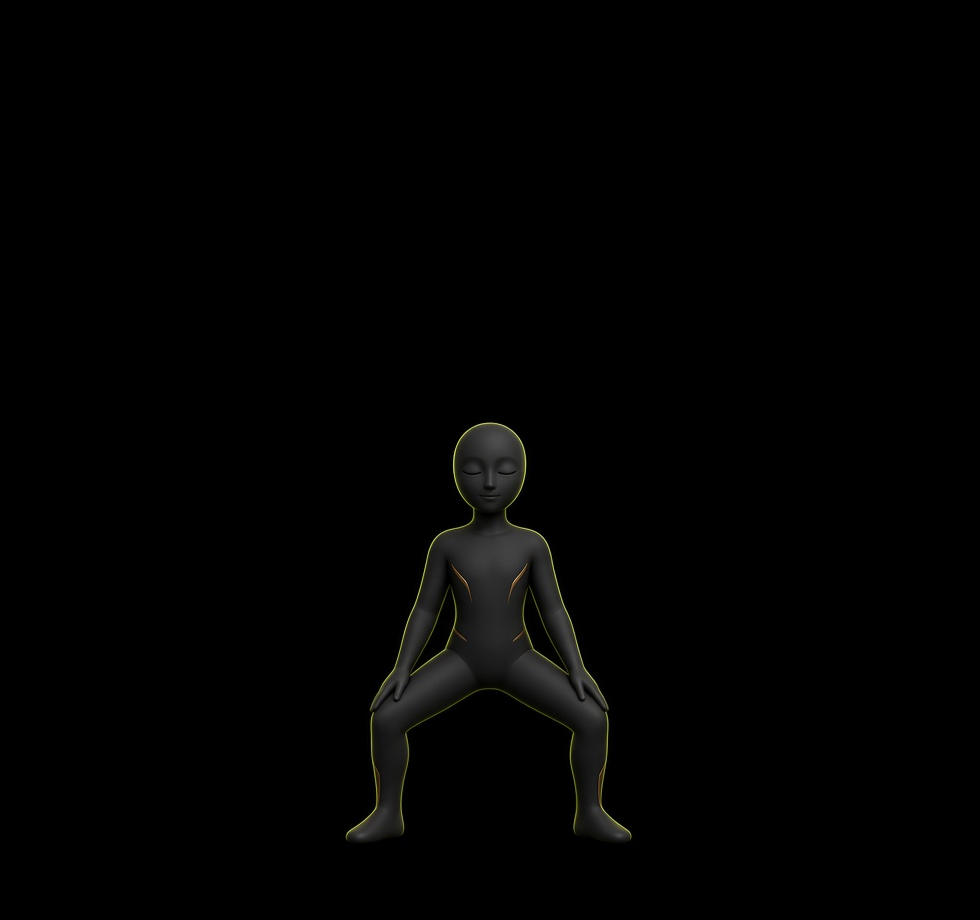
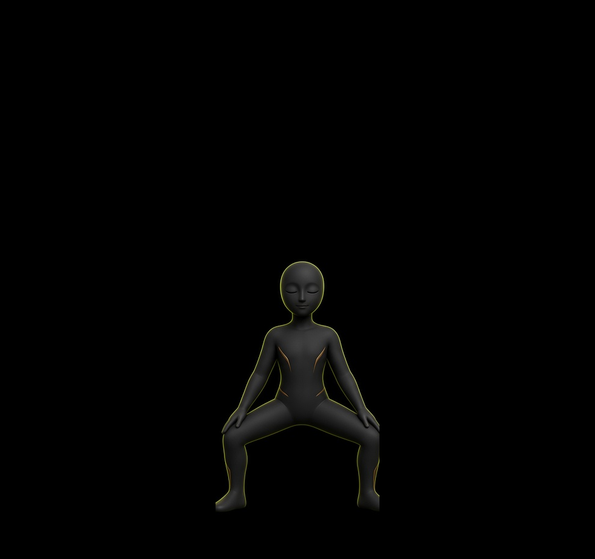
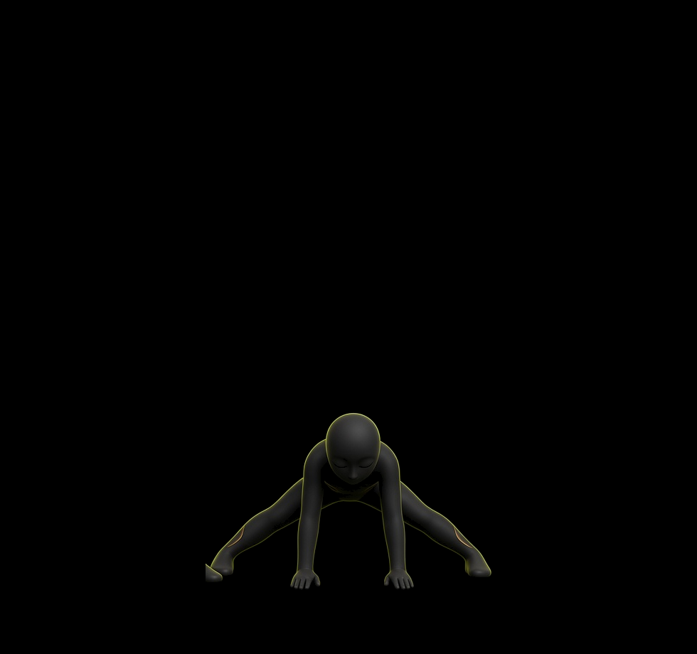

ALONGAR
Duração 15 neste exemplo, com 9 dias — o replay para em 60% da abertura, com as mãos ainda a caminho das pernas, não no chão. O desenho é um teste de movimento contínuo: pernas e mãos mudam a cada quadro, sem trocar as quatro fotos. A silhueta continua segmentada e não é o personagem das referências. Interpolar essas fotos duplica o corpo, então elas não viram a animação.



